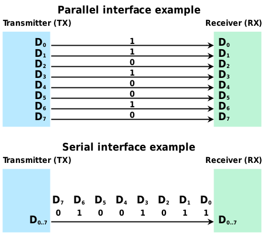
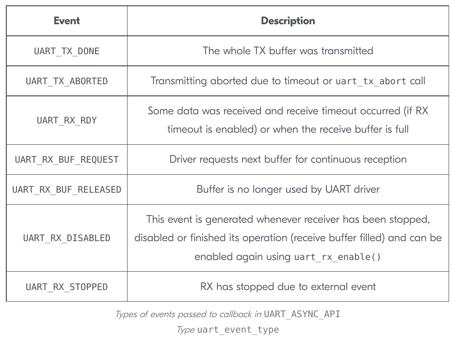
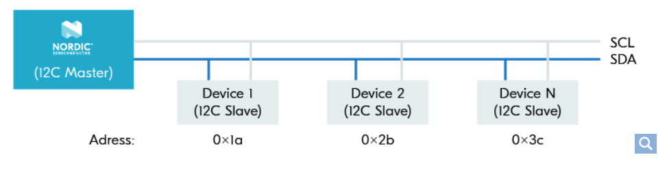
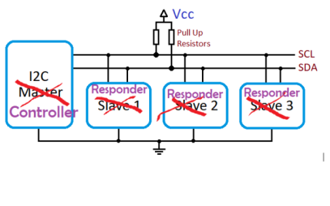

Send data one bit at a time, sequentially, over a single wire; in contrast to parallel communication, where multiple bits are sent as a whole, on multiple wires.
Common examples:
RS-232
USB
SATA/SCSI
PS/2
Ethernet
HDMI/DVI
PCIe (not PCI!)

Why Serial over Parallel?
Parallel communication can communicate more bits / clock cycle, but serial links can be clocked much faster.
No clock skew between bits
Fewer cables / connections (cheaper)
Better isolation from noise / interference / crosstalk
UART is an asynchronous serial communication protocol. It is a common peripheral on microcontrollers, and is used to communicate with other devices, such as sensors, over a serial link.
Start bit is usually LOW, followed by 8 bits of data.
A parity bit–conveying an even of odd data stream–can be used for error checking.
Tx/Rx without Flow Control
RX senses the start bit and then stores the subsequent bits in a shift register (making a “word”).
The data baud rate between TX:RX needs to be established between the two devices. This is typically 9600 or 115200 bits/s.
Tx/Rx with Flow Control
RTS (Request to Send)
CTS (Clear to Send)
UART ISRs are triggered by RTS and CTS events.
High-priority event helps avoid missing data, but can cause starvation of other tasks.
Low-priority event can cause data loss, but allows other tasks to run.
Multi-threaded RTOS can be much more robust than a single-threaded super-loop system.
UART Firmware API Events

Inter-Integrated Circuit (I2C)

Widely-used 2-wire serial communication protocol.
Limited to short distances.
SCL: serial clock
SDA: serial data
Common data communication rates: 100, 400, & 1000 kbps
Access data using simple read() and write() functions.
Multiple devices, with unique addresses, can be connected to the same bus.
Alternative Master/Slave Terminology

Primary/Secondary
Controller/Peripheral
Controller/Responder
Parent/Child
Nordic TWI (Two-Wire Interface)
Nordic’s I2C implementation is called TWI (Two-Wire Interface).
UART vs. I2C
UART is a point-to-point protocol, while I2C is a multi-point protocol.
UART is asynchronous (2-way communication, full duplex), while I2C is synchronous (half duplex, needs CLK).
Both are “slow”, but I2C is faster.
UART is simpler to implement, but I2C is more robust.
SenseWire (I3C)
2-pin superset of I2C (backward compatible)
Lower power and space requirements
Higher data rates
Dynamic address assignment
“Hot” peripheral connection
Serial Passing Interface (SPI)
Like I2C, but allow for full duplex (concurrent send/receive of data).
Needs 4 wires:
MOSI: master out, slave in
MISO: master in, slave out
SCLK: serial clock
SS: slave select (LOW to select)
SS instead of device address
I2C vs. SPI
Higher data speeds than I2C (e.g., SD card)
More complicated connectivity scheme for multiple peripherals
Zephyr: Sensors
The reading of data from sensors is so common that Zephyr provides a common API for accessing them.
#include <zephyr/kernel.h>#include <zephyr/device.h>#include <zephyr/logging/log.h>#include <zephyr/drivers/sensor.h>// prf.conf -> CONFIG_SENSOR=y#define MEASUREMENT_DELAY_MS 1000LOG_MODULE_REGISTER(main, LOG_LEVEL_DBG);int read_temperature_sensor(conststruct device *temp_sensor,float*temperature_degC);// the microchip,mcp9808 cannot be accessed in the DT by alias// instead, have to directly access the node name, with comma replaced by underscoreconststruct device *const temp_sensor = DEVICE_DT_GET_ONE(jedec_jc_42_4_temp);staticfloat temperature_degC;int main(void){int ret;if(!device_is_ready(temp_sensor)){ LOG_ERR("Temperature sensor %s is not ready", temp_sensor->name);return-1;}else{ LOG_INF("Temperature sensor %s is ready", temp_sensor->name);}// read the temperature every MEASUREMENT_DELAY_MSwhile(1){ ret = read_temperature_sensor(temp_sensor,&temperature_degC);if(ret !=0){ LOG_ERR("There was a problem reading the temperature sensor (%d)", ret);return ret;} LOG_INF("Temperature: %f",(double)temperature_degC); k_msleep(MEASUREMENT_DELAY_MS);}return0;}int read_temperature_sensor(conststruct device *temp_sensor,float*temperature_degC){/* Fetch-n-get temperature sensor data INPUTS: temp_sensor (const struct device *) - temperature sensor device temperature_degC (float *) - pointer to store temperature in degrees Celsius RETURNS: 0 - success Otherwise, error code */struct sensor_value sensor_vals ={.val1 =0,.val2 =0};int err = sensor_sample_fetch(temp_sensor);if(err !=0){ LOG_ERR("Temperature sensor fetch(): %d", err);return err;}else{// sensor channels: https://docs.zephyrproject.org/latest/doxygen/html/group__sensor__interface.html#gaaa1b502bc029b10d7b23b0a25ef4e934 err = sensor_channel_get(temp_sensor, SENSOR_CHAN_AMBIENT_TEMP,&sensor_vals);if(err !=0){ LOG_ERR("Temperature sensor get(): %d", err);return err;}}// data returned in kPa*temperature_degC = sensor_value_to_float(&sensor_vals); LOG_INF("Temperature (deg C): %f",(double)*temperature_degC);return0;}